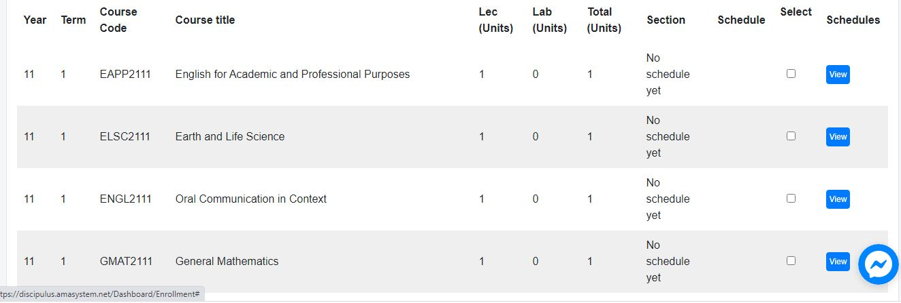

Amaoed Guide for Browser Users
Join to AMAers discord by clicking Titans Logo
Welcome mga AMAers ginawa ang simpleng documentation nato para maging guide nyo kung medyo nalilito kayo at nagugulan wag kayo magalala gulong gulo rin ako nung una.
Kung wala yung hinahanap nyong sagot rito wag kayo mag alala pwede nyong itanong sa mga Titans yan sa discord here.
For browser users lang po ang guide na ito sali po kayo sa discord namin or ask nyo lang si Shandel and Rei
.jpg)
Amaoed Portal Links
Eto ang mahahalagang portal na kaylangan nyo para ma access ang amaoed
Here they are:
- discipulus - discipulus portal.
- amaesonline - amaesonline portal.
- SHS amaesonline - SHS amaesonline portal.
Q. Paano mag log in
You must have your USN na binigay sayo (extremely important)
Q. Paano malaman ang COR at section
Sa menu hanapin mo yung enrollment
Tapos eto ang makikita nyo

Check nyo lahat yan pagkatapos click nyo yung view pili kayo ng section nyo, pagtapos na kayo continue nyo na

Makikita nyo na yung COR nyo at section sroll down kayo tapos click nyo yung confirm (Wag nyo pansinin yung 9,500 epal lang yan)

Pag katapos punta na kayo sa SHS amaesonline portal.
Mag log in kayo
Makikita nyo na yung mga kinuha nyong courses (PAG HINDI NYO NAKITA MAG LOG OUT KAYO INTAY LANG KAYO NG MGA ILANG MINUTO TAPOS LOGIN ULIT)

Q. Paano po makita yung mga modules at quizzes
Pili lang po kayo sa mga kurso na kinuha nyo

Wag kakalimutan
Kind Regards,
CedricB